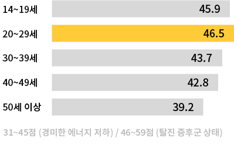

scroll me
과도한 업무로 인한
신체적, 정서적 피로로
번아웃 증후군을 겪는 현대인들
최근에 번아웃을 경험하셨나요?
번아웃을 경험했다면, 얼마나 번아웃이 왔나요?
ON/OFF FACTORY는
가상체험을 통해 번아웃 증후군의
증상을 인지하고 경각심을
심어주는 예방 프로젝트입니다
번아웃 증후군을 예방하기 위해서는 적절한 일과 휴식을 병행해야 한다는 의미를 담아 ON / OFF 스위치를 형상화하여 로고로 제작했습니다.
생쥐 찰리 Player
치즈를 많이 모아서 자수성가하는게 꿈인 평범한 생쥐.
온·오프 공장에서 박스를 분류하는 일을 하고 있다.
온화한 성격의 소유자다.
-
Off work
-
panic
-
tired
view point
표정의 변화가 다양하다. 퇴근하거나 휴식을 취할 때
제일 행복한 표정을 짓고, 실수를 하면 당황한 얼굴이
그대로 표정에 드러난다.

고양이 관리자 NPC
온·오프 공장의 관리자인 삼색 고양이.
생쥐 찰리의 직장 상사이기도 하다.
무뚝뚝한 성격을 가졌으며 일할 때 실수하는 것을 싫어한다.
-
concerned
-
frustrating
-
tired
view point
박스를 색상에 맞춰 잘 옮기면 표정에 변화가 없다.
첫번째로 실수할 경우에는 신경이 쓰이는게 보이지만
화를 내지는 않는다. 자주 실수하지 않도록 해보자.

-
주인공 찰리는 자신의 목표를 위해 박스 공장에서 일합니다.
하지만 쉬지 않고 일을 반복하자 박스를 운반하는 레일의 속도는
점점 빨라져 따라잡을 수 없고 급기야 환각까지 보이게 됩니다.
찰리는 이런 환경 속에서도 일을 계속 할 수 있을까요?

이윤지
Project Manager
Unity Developer

김지수
Planner
Designer

한채연
Designer

남정아
Web Developer
- Kaywon University Art OF Design
- Digital Media Design Gradiation Project
- team ASG / prof. Jo Geon Hui